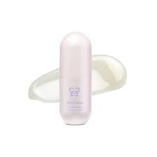
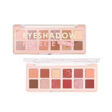
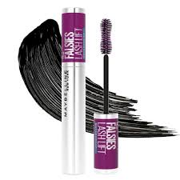

Preparation for Dry Skin Makeup
Before applying makeup to dry skin, it's essential to prepare your skin to ensure a flawless and long-lasting result. Follow these steps:
- Cleanser: Start with a gentle cleanser to remove any impurities and create a clean canvas.
- Moisturizer: Apply a rich moisturizer to hydrate and nourish your skin. Pay attention to dry areas.
- Primer: Use a hydrating primer to create a smooth surface for makeup and lock in moisture. 


Mulailah dengan mengoleskan pelembap yang menghidrasi kulit dan biarkan meresap sepenuhnya. Selanjutnya, aplikasikan primer untuk menciptakan dasar yang halus.
Makeup Steps for Dry Skin
Follow these steps to achieve a natural look on dry skin:
- Foundation
- Concealer
- Cream Blush
- Eyeshadow 
- Mascara 
- Lips
Pilih foundation yang memberikan kilau alami atau melembapkan untuk menambahkan cahaya alami. Aplikasikan dengan merata menggunakan spons atau kuas makeup.

Aplikasikan concealer krim di bawah mata dan pada bintik-bintik gelap atau kemerahan. Blending dengan lembut untuk hasil yang rata.
Gunakan blush krim untuk menambahkan warna pada pipi Anda. Tepuk secara merata pada bagian tengah pipi dan ratakan.
Pilihlah warna netral dan alami. Aplikasikan warna terang di kelopak mata, warna sedikit lebih gelap di lipatan mata, dan sentuhan shimmer di tengah kelopak mata.
Gunakan maskara pemberi volume untuk mempertegas bulu mata Anda. Aplikasikan dari akar hingga ujung.
Pilihlah liptint warna nude atau yang mirip dengan warna asli bibir Anda. Gunakan lip balm yang melembapkan.
Setting Your Makeup
To prevent your makeup from cracking and maintain a natural look, use a setting spray with hydrating properties. This will keep your skin hydrated throughout the day.


Selesaikan dengan setting spray yang melembapkan untuk mengunci makeup dan memberikan hasil yang segar dan alami. Jika ingin memperpanjang daya tahan makeup, gunakan bedak tabur di area-area yang cenderung berminyak atau untuk mengatasi kilap berlebih.